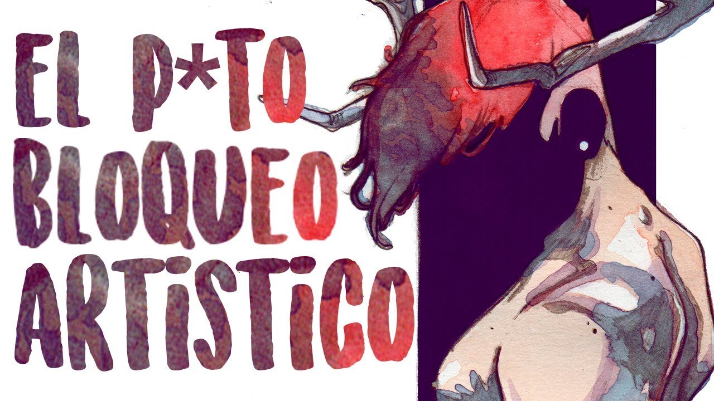

Qué hacer cuando no sabes qué dibujar
Todos los artistas, desde los principiantes hasta los más experimentados, han enfrentado el famoso “bloqueo creativo”. Ese momento en el que el papel en blanco parece desafiarte y las ideas simplemente no llegan. Pero la creatividad no desaparece, solo necesita un pequeño empujón.
1. Dibuja sin presión
Uno de los mayores enemigos de la creatividad es la autoexigencia. No todo dibujo tiene que ser perfecto o digno de mostrarse. Permítete hacer trazos libres, garabatos o bocetos sin propósito. A veces, de un dibujo sin sentido puede nacer una gran idea.
2. Inspírate en tu entorno
Observa lo que te rodea: objetos cotidianos, personas, animales o lugares. Intenta redibujarlos con tu propio estilo o combínalos en una escena surrealista. Incluso una taza de café o una planta pueden convertirse en la base de una ilustración interesante.
3. Usa retos o listas creativas
Los retos de dibujo como Inktober, Draw This in Your Style o listas temáticas pueden ayudarte a salir del bloqueo. Te dan un punto de partida sin limitarte demasiado. Además, seguir un reto puede mantenerte constante y mejorar tu técnica con el tiempo.
4. Cambia de técnica
Si siempre dibujas en digital, prueba el papel. Si usas lápiz, atrévete con tinta, acuarela o collage. Cambiar de medio puede activar partes distintas de tu creatividad y romper la rutina visual.
5. Acepta el descanso como parte del proceso
A veces, lo que necesitas no es forzar una idea, sino desconectar. Sal a caminar, escucha música o ve una película. Tu mente sigue procesando inspiración incluso cuando no dibujas.
Recuerda: la creatividad no se pierde, se entrena. Cada momento de bloqueo es también una oportunidad para explorar, experimentar y redescubrir lo que te mueve a crear.